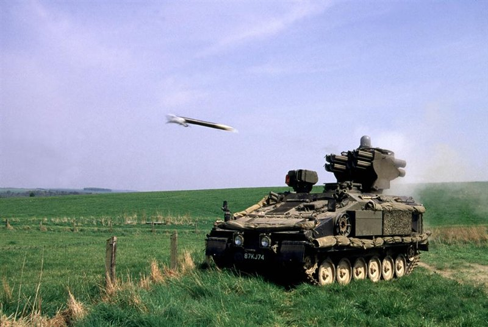
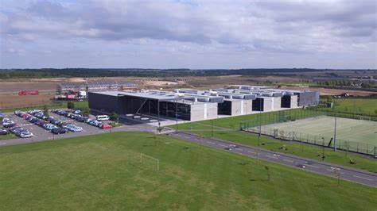

The British army
2012 - 2020
I first joined the British army in 2012 as a Gunner in the artilery. I started in 16th regiment air defence, where I was given the role of acs (artilery command systems), this role is about radio communications and mapping for aircraft. With 16th regt I was deployed to the falkland islands where I was located for 6 months. After this deployment I asked to be tranferd to 12th regt armoured air defence, this was due to the change of pace and in an armoured division you move more in the field. When I was in 12th regt I spent many months at a time in germany.
Corby Business Academy
2021 - 2022
I found this Job advertised on Facebook, where i enquired about the job and found that this was an apprentiship. this was a new start for me as this was the first look i had into the world of technology. the apprentiship was a Digital support technition job. i learned alot during this job as i had to learn how systems and software worked then i had to farward my knowlage onto teachers to assist them in teaching with mordern technology.